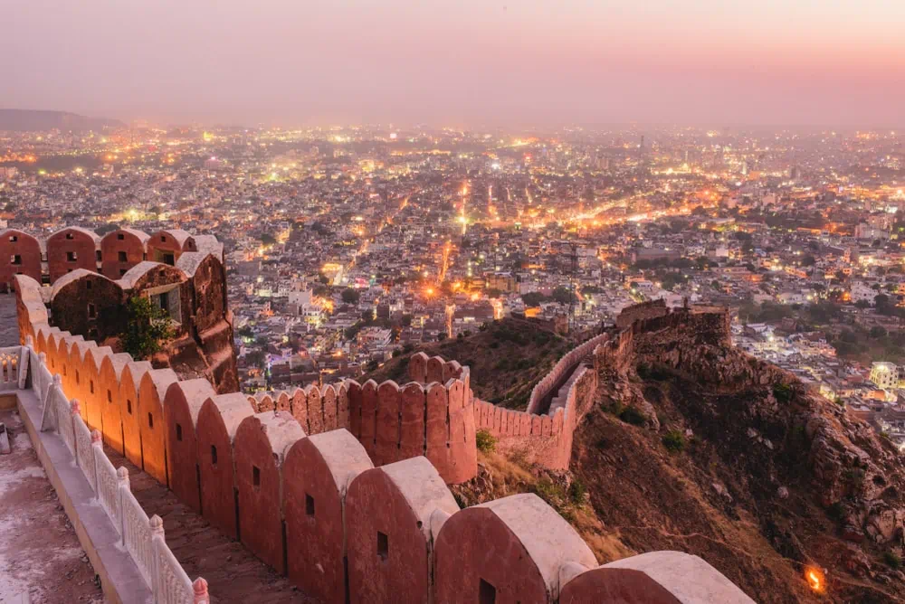

Beauty of Rajasthan
Rajasthan is one of the most beautiful tourist destinations in India. Its palaces and forts are major attractions that draw many tourists to the state each year. Behind each palace and fort is a riveting story about its kings, their kingdoms and the colourful culture of Rajasthan. Six of the forts – Chittorgarh Fort, Kumbhalgarh Fort, Ranthambhore Fort, Gagaron Fort, Amber Fort and Jaisalmer Fort – were declared UNESCO World Heritage Sites in 2013. Rajasthan also attracts tourists with its fairs and festivals, handicrafts, heritage hotels, adventure tourism, rural and eco-tourism, religious tourism and temple architecture. In recent years, the state has made significant efforts to develop and boost tourism.
Jaipur

Jaipur became known as “The Pink City” when, in 1876, Maharaja Ram Singh had most of the buildings painted pink—the color of hospitality—in preparation for a visit by Britain's Queen Victoria. Today, the city is known for its bazaars, forts, temples, palaces, and wildlife sanctuaries.Palaces of Jaipur includes Rambagh Palace, City Palace, Samode Palace, Amber Palace, Hari Mahal Palace, Rajmahal Palace and many more. The Pink City has a long history of royalty, and the royal family still has quarters there.
Udaipur
the city of lakes Udaipur is located around azure water lakes and is hemmed in by lush green hills of Aravallis. The famous Lake Palace, located in the middle of Lake Pichola is one of the most beautiful sights of Udaipur.Udaipur's Kumbhalgarh Fort has the world's second-longest wall after the Great Wall of China.
Jodhpur
Jodhpur is famous for the distinctive colour of its buildings, a reminder of the Brahmins, who used to paint their houses blue to deter insects and keep the dwellings cool during the summer. Founded in 1459, the old city is encircled by an imposing wall and accessed through eight magnificent gates.Jodhpur is second largest city in the Indian state of Rajasthan and has long been a popular destination among international tourists.And it is also known as 'Blue city'.
Jaisalmer

The main attraction of Jaisalmer is the Thar Desert. When you visit Jaisalmer never forget to go for a camel safari in the Thar Desert. Many old monuments in Jaisalmer depict the glory of Rajasthan Kingdom rule. Jaisalmer is declared as UNESCO World Heritage Site due to a number of forts and old monuments.Jaisalmer means the Hill Fort of Jaisal. Jaisalmer is sometimes called the "Golden City of India" because of the yellow sandstone used throughout the architecture of both the fort and the town below, imbues both with a certain golden-yellow light.
Bikaner
Bikaner. It is one of the cities in Rajasthan that has maintained its low-key charm and has received the name Red City because of the Havelis that are made of red sandstone.Bikaner is characterized by its vibrant deserts, significant forts, which makes it a blooming beauty in Thar Desert. The city's forts and palaces reflect the magnificence of its rulers, giving it a unique sense of beauty.
Ajmer
Ajmer, located in the Ajmer District of Rajasthan is the 5th largest city of the state. Although Ajmer Sharif Dargah, the shrine of Khwaja Muin-ud-din Chishti, remains as the most famous tourist places to visit in Ajmer, the city is also significantly known for the Jain religion and is home to an amazing golden Jain Temple. Ajmer is also a well-known learning centre.
Ranthambore
Ranthambore National Park is a vast wildlife reserve near the town of Sawai Madhopur in Rajasthan, northern India. It is a former royal hunting ground and home to tigers, leopards and marsh crocodiles. Its landmarks include the imposing 10th-century Ranthambore Fort, on a hilltop, and the Ganesh Mandir temple. Also in the park, Padam Talao Lake is known for its abundance of water lilies


This was the first time I had visited India and it has left me with the most wonderful memories I just want to go back. I would definitely recommend visiting.